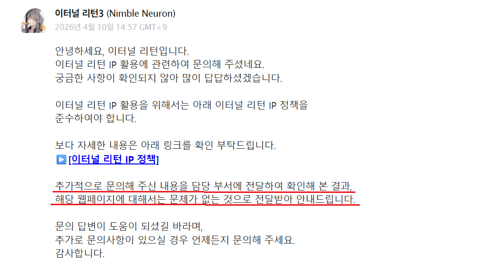

해당 시뮬레이터는 연구용이며, 사용된 모델링은 '실티'님의 쇼이치 시뮬레이터에서 추출한 모델링임을 밝힙니다.
해당 모델링의 출처가 불분명하기에 연구용으로만 사용함을 밝힙니다.
본 사이트는 일시적으로 호스팅된 후 운영이 중지됩니다.
안내문구 보지 않기

본 사이트는 님블뉴런 IP에 위배되지 않는 선에서 제작되는 2차 창작 사이트입니다.
원작과 다른 점이 있다면 피드백해주세요!
Thanks to..
(테스트 해주신 분들)
쿠온우횬, 정선우123, 지존똥, 칼챔충, 루미널
닫기
업데이트 내역
닫기
⚠ 안내
화면이 클수록 원작에 가깝게 보입니다.
F11키
를 눌러 전체화면으로 이용해주세요!
(3D 화면은 창 크기와 무관하게 1920×1080 배율로 고정됩니다)
Microsoft Edge 브라우저를 사용하신다면
'마우스 제스처'
기능을 비활성화해주세요.
(우클릭 드래그가 제스처로 인식되어 탭이 닫힐 수 있습니다)
하루동안 다시 보지 않기
확인
쇼이치 시뮬레이터
이터널리턴 쇼이치 연습 시뮬레이터
게임 시작
더미 처치 챌린지
랭킹
V자 각 퀴즈
단검 에임 연습
광물타기 연습
궁 추격 연습
쇼이치 봇 1 vs 1
명예의 전당
업데이트 내역
ⓘ 본 사이트는 (주)님블뉴런의 '이터널리턴'을 바탕으로 제작된 2차 창작 사이트입니다.
안내문구 보지 않기
3D 시뮬레이터 로딩 중…
🏆 챌린지 클리어!
0.00초
기록 등록
— 랭킹 TOP 10 —
다시 도전
로비로
안내
해당 시뮬레이터는
원작과 조작감이 다르기 때문에
,
되도록 인게임 연습모드에서 쇼이치를 연습해주시길 바랍니다.
하루 동안 다시 보지 않기
확인
더미 처치 챌린지 랭킹
TOP 10
닫기
명예의 전당
닫기